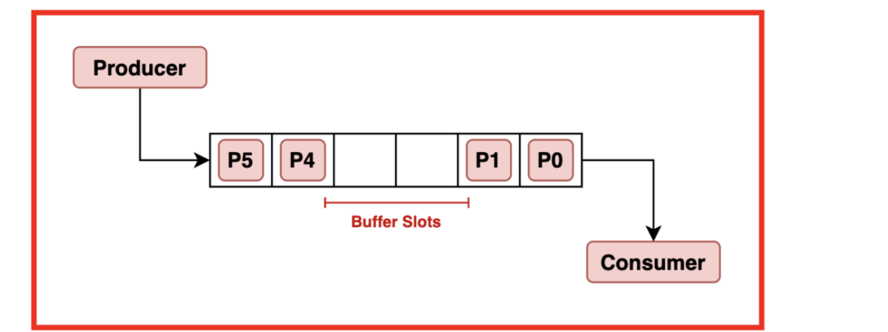
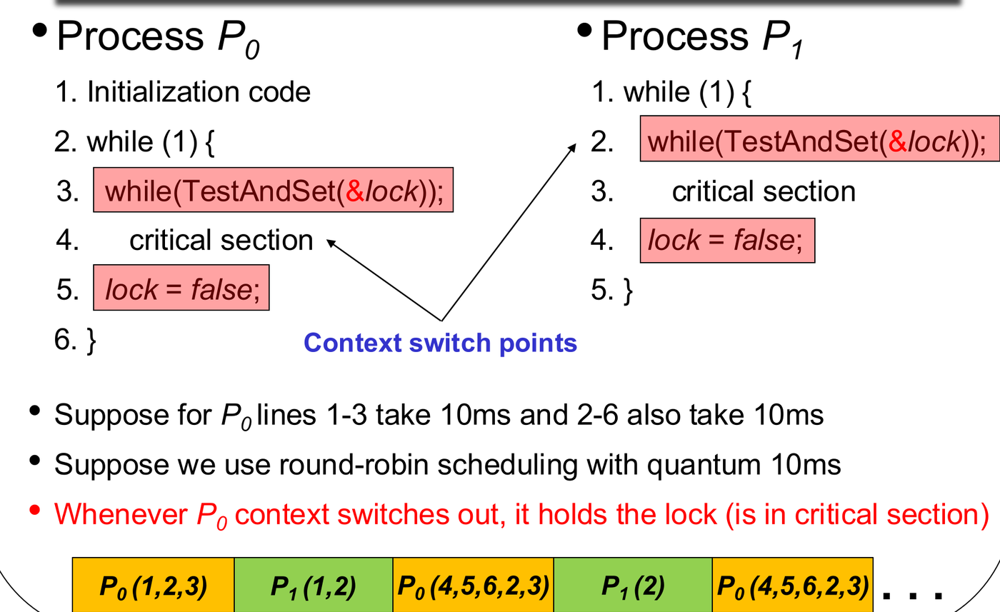
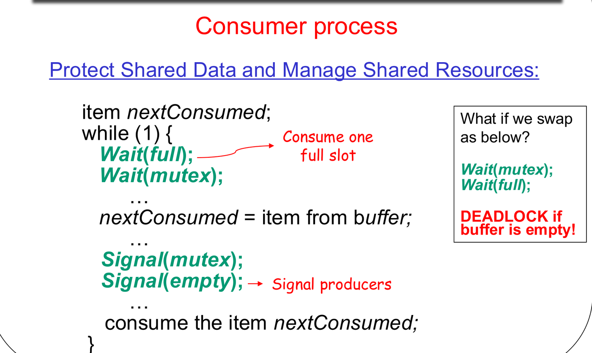
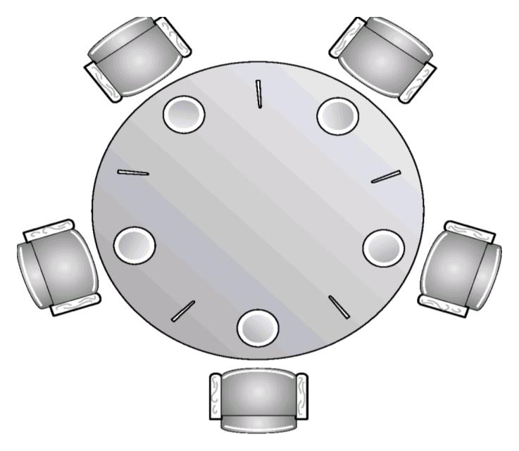

Concurrent processes that share data can leave it inconsistent: the
final value depends on where the context switches fall. This chapter
defines that problem (the critical-section problem),
then solves it three ways: user-level software, hardware instructions
(TestAndSet), and OS semaphores. It ends
with three classic problems.
1. Race Conditions
Data is inconsistent when its value depends on the order in which instructions from concurrent processes run, that is, on when context switches occur. Keeping it consistent needs mechanisms that order the reads and writes of shared data.
Example: producer–consumer with a shared counter

#define BUFFER_SIZE 10
item buffer[BUFFER_SIZE];
int in = 0, out = 0; // next empty slot (producer), next full slot (consumer)
int counter = 0; // items in the buffer
// Producer // Consumer
while (1) { while (1) {
while (counter == BUFFER_SIZE); // full while (counter == 0); // empty
buffer[in] = nextProduced; nextConsumed = buffer[out];
in = (in + 1) % BUFFER_SIZE; out = (out + 1) % BUFFER_SIZE;
counter++; counter--;
} }counter++ and counter-- each compile to
three machine instructions:
Producer counter++ |
Consumer counter-- |
|---|---|
register1 = counter |
register2 = counter |
register1 = register1 + 1 |
register2 = register2 - 1 |
counter = register1 |
counter = register2 |
Start with counter = 5, run each once, and switch
between them like this:
- Producer:
register1 = counter→ 5;register1 = register1 + 1→ 6. - Switch. Consumer:
register2 = counter→ 5;register2 = register2 - 1→ 4. - Switch. Producer:
counter = register1→ 6. - Switch. Consumer:
counter = register2→ 4.
The answer should be 5. This is a race condition: the result depends on the timing of the context switches. Making each single read or write atomic does not help, because the context switch falls between the read and the write.
Past-paper T/F: Race conditions
- AY18/19 S2 Q2a(i): Race conditions happen because of context switches. True. The interleaving of non-atomic instruction sequences by context switches causes them; disabling context switches (atomic execution) prevents them.
- AY19/20 S1 Q2a(i): To prevent race conditions,
it is sufficient to ensure that each read or write to any shared
variable is atomic. False.
counter++is a read, an add and a write; a switch between the read and the write still loses an update. The whole sequence needs mutual exclusion. (The posted student solution says True; that is wrong.)
2. The Critical-Section Problem
processes share some data. Each process has a critical section (CS): the code that accesses the shared data (changes shared variables, updates a table, writes a file), where at least one process writes. The problem is to design a protocol so that no two processes execute their critical sections at the same time.
while (1) {
entry section // ask permission to enter
critical section
exit section // leave, notify the others
remainder section
}Assumptions: every process makes progress in its critical and remainder sections, and nothing is assumed about the relative speed of the processes.
A correct entry/exit protocol must satisfy:
- Mutual exclusion: if a process is in its CS, no other process is in its CS.
- Progress: if no process is in its CS and some processes want to enter, the choice of who enters next cannot be postponed indefinitely.
- Bounded waiting: after a process asks to enter and before it is let in, other processes may enter their CS only a bounded number of times.
Progress and bounded waiting together ensure that no process is stuck in its entry section forever. Progress does not imply bounded waiting: a protocol that always favours always lets somebody in, but may wait forever.
3. User-Level Solutions for Two Processes
These use only shared variables, no OS support. is one process and the other.
Algorithm 1:
turn only (strict alternation)
int turn = 0; // turn == i: Pi may enter
while (turn != i); critical section; turn = k; remainder section;| Property | Holds? | Why |
|---|---|---|
| Mutual exclusion | Yes | turn changes only in the exit section, so the other
process cannot get in. |
| Progress | No | turn = 0 and
is in a long remainder section (an endless loop or blocked I/O).
wants in but must wait. |
| Bounded waiting | Yes | turn alternates fairly between the two. |
Algorithm 2: flag only
Algorithm 1 cannot tell whether a process even wants to enter. Algorithm 2 gives each process a flag to say so.
boolean flag[2] = {false, false}; // flag[i]: Pi wants to enter
flag[i] = true; while (flag[k]); critical section; flag[i] = false; remainder section;| Property | Holds? | Why |
|---|---|---|
| Mutual exclusion | Yes | When
is in, flag[0] = true until its exit section, so
waits. |
| Progress | No |
sets flag[0] = true, switch,
sets flag[1] = true. Both loop forever. |
| Bounded waiting | Yes | Once has set its flag, cannot enter ahead of it. |
Algorithm 3:
flag + turn (Peterson’s algorithm)
Algorithm 2 cannot choose between two processes that want in at the
same time. Algorithm 3 adds turn to break the tie.
flag[i] = true; // I want to enter
turn = k; // but you go first
while (flag[k] && turn == k); // wait while you want in and it is your turn
critical section
flag[i] = false;
remainder section| Property | Holds? | Why |
|---|---|---|
| Mutual exclusion | Yes | If
is in, flag[0] = true. A
that now wants in first sets turn = 0, so its loop
condition stays true. |
| Progress | Yes | If
is in its remainder section, flag[1] = false and
enters at once. If both are in the entry section, the latest value of
turn admits one. |
| Bounded waiting | Yes | A process that leaves and tries again sets turn to the
other, so the waiter enters after at most one entry. |
These software solutions are hard to extend beyond two processes, which is why the OS provides support.
Tutorial 4 Q1 / AY17/18 S1 Q1c: A flawed flag/turn protocol
Question: Consider the following user-level
solution to the critical section problem, where flag and
turn are shared variables initialized to false and 0,
respectively. Determine which of the three requirements are not
satisfied, with justifications.
// P0 // P1
while (1) { while (1) {
flag = true; turn = 0;
while (turn == 1); while (flag and turn == 0);
critical-section critical-section
turn = 1; flag = false;
remainder-section remainder-section
} }Solution:
- Mutual exclusion fails.
:
turn = 0;flagis false, so it enters its CS. Switch. :flag = true;turnis 0 (not 1), so it enters too. Both are inside. - Progress fails.
passes once and leaves with
turn = 1. It comes back, setsflag = true, and spins onwhile (turn == 1)forever if stays in its remainder section, even though the CS is empty. - Bounded waiting holds. If
waits at
while (turn == 1), it enters as soon as runsturn = 0, so enters 0 times first. If waits, it enters when runsturn = 1after its CS, so enters at most once first.
Tutorial 4 Q2: Disabling interrupts; progress vs. bounded waiting
Question: Indicate whether the following statements are true or false. Justify your answers. (a) Mutual exclusion can be achieved by disabling interrupts during the critical section. (b) If a solution to a critical section problem satisfies progress, then it also satisfies bounded waiting.
Answer:
- (a) True. With interrupts disabled, no other process, not even the OS, can run during the critical section.
- (b) False. A solution can always favour
and still satisfy progress. With
flaginitially false and a largetimeout:
// P0 // P1
while (flag); while (flag) { wait(timeout); }
flag = true; flag = true;
critical section; critical section;
flag = false; flag = false;
backs off for a long time each time it finds flag set, so
can enter again and again: bounded waiting fails for
.
AY19/20 S1 Q1a: Peterson with the wrong turn value
Question: Consider the following user-level solution to the critical section problem, where the code for a process Pi (i = 0 or 1) is shown. (i) Explain how the mutual exclusion property is violated. (ii) Propose a simple modification to fix the problem.
while (1) {
flag[i] = true;
turn = i;
while (flag[i+1 mod 2] and turn == i+1 mod 2);
critical-section
flag[i] = false;
remainder-section
}Solution:
- (i) Each process gives the turn to
itself.
:
flag[0] = true. Switch. :flag[1] = true. Switch. :turn = 0; the loop teststurn == 1, false, so enters. Switch. :turn = 1; the loop teststurn == 0, false, so enters. Both are inside. - (ii) Change
turn = itoturn = i+1 mod 2(give the turn to the other process). This is Peterson’s algorithm. Removingflag(Algorithm 1) orturn(Algorithm 2) also restores mutual exclusion, but each breaks progress.
AY18/19 S2 Q2d: Peterson with turn set before flag
Question: Justify if this code satisfies all the
properties required for a solution to the critical section problem.
turn is initialized to 0 and flag[2] to
false.
// P0 // P1
while (1) { while (1) {
turn = 1; turn = 0;
flag[0] = true; flag[1] = true;
while (flag[1] and turn == 1); while (flag[0] and turn == 0);
critical section critical section
flag[0] = false; flag[1] = false;
remainder section } remainder section }Solution:
- Mutual exclusion fails.
:
turn = 1. Switch. :turn = 0,flag[1] = true;flag[0]is false, so enters. Switch. :flag[0] = true;turnis 0, so enters. Both are inside. The order matters: Peterson sets the flag before the turn. - Progress and bounded waiting hold:
turnholds only 0 or 1, so one waiter always gets in, and each exit clears that process’s flag.
4. Hardware Support:
TestAndSet
The OS supports the critical-section problem at three levels, low to high: synchronization hardware, semaphores, monitors.
Disabling interrupts
With interrupts disabled during the CS, nothing else can run, so mutual exclusion holds. Only the kernel may do it (disabling interrupts is privileged), and it does not stop other cores on a multiprocessor.
TestAndSet
Modern CPUs provide atomic instructions: they run without interruption, so no context switch can fall inside them.
boolean TestAndSet(boolean *target) { // runs atomically
boolean rv = *target; // get current value
*target = true; // store true
return rv; // return old value
}
boolean lock = false;
while (1) {
while (TestAndSet(&lock)); // entry: acquire lock
critical section
lock = false; // exit: release lock
remainder section
}A process enters when TestAndSet returns
false, which also sets lock to
true.
| Property | Holds? | Why |
|---|---|---|
| Mutual exclusion | Yes | lock is false just before the winner’s
TestAndSet and true afterwards; only the exit section
resets it. |
| Progress | Yes | If lock is false, the first process to call
TestAndSet enters at once. |
| Bounded waiting | No | See below. |
Why bounded waiting fails. Suppose round-robin with a 10 ms quantum, and ’s loop (test, CS, release, test again) takes exactly the quantum, so is always inside its CS when it is switched out. then always finds the lock held and spins for its whole quantum, while enters again and again.
The textbook has a longer TestAndSet solution with a
waiting[] array that does satisfy bounded waiting; the
lecture marks it not examinable.

Busy waiting (spinning in the entry loop) wastes CPU time, but it needs no context switch, so it is the better choice when critical sections are very short.
Tutorial 4 Q3: TestAndSet that stores false
Question: Consider the following implementation
of TestAndSet(), and a hardware-level solution where the
initial value of lock is True. Does this solution satisfy
mutual exclusion and progress? Justify your answers.
boolean TestAndSet(boolean *target) { // Process Pi
boolean rv = *target; while (1) {
*target = false; while (TestAndSet(&lock) == false);
return rv; critical-section
} lock = false;
remainder-section
}Solution:
- Mutual exclusion holds. The first process gets
true, leaves the loop, and leaveslock = false. Every other process then getsfalseand loops. - Progress fails. Nothing ever sets
lockback totrue; the exit section writesfalse. After the first CS, everyTestAndSetreturnsfalse, so nobody ever enters although the CS is empty.
AY18/19 S1 Q1c: Entry and exit code for a TestAndSet that stores false
Question: Suppose TestAndSet is
implemented as rv = *target; *target = false; return rv;.
Give the code for Entry and Exit sections using this TestAndSet, which
ensures mutual exclusion for critical sections in processes.
Solution: invert the meaning of lock:
true means free.
boolean lock = true; // initially free
while (!TestAndSet(&lock)); // entry: wait until we read true
critical section
lock = true; // exit: mark free againThe first process reads true and leaves
lock = false, so the others read false and
wait until the exit section sets it back to true.
AY18/19 S2 Q2b and Q2a(iv): Why a plain Boolean lock fails
Question (Q2b): A system does not have the atomic TestAndSet() instruction. Devise a concrete example with pseudo-code to explain whether a simple Boolean variable “lock” could be used to ensure mutual exclusion for the critical section problem.
Solution: It cannot.
while (lock); lock = true; // entry (lock starts false)
critical section
lock = false; // exit-
runs
while (lock), findsfalse, leaves the loop. Switch. -
runs
while (lock), findsfalse, leaves the loop. Switch. -
sets
lock = trueand enters. Switch. setslock = trueand enters. Both are inside.
The test and the set are separate instructions;
TestAndSet exists to make them one atomic step.
Q2a(iv): A solution implemented with only the atomic TestAndSet() instruction would violate the progress requirement. False. It satisfies progress; it violates only bounded waiting.
5. Semaphores
A semaphore is an integer shared variable that processes can access only through two atomic system calls:
Wait(S): if , decrement ; otherwise wait (in the waiting state, or in a busy loop).Signal(S): increment .
| Type | Values |
|---|---|
| Counting semaphore | Any integer (unrestricted domain) |
| Binary semaphore | Never greater than 1 |
Critical section with a semaphore: shared
semaphore mutex = 1; and each process runs
Wait(mutex); critical section; Signal(mutex); remainder section.
Busy-waiting implementation
Wait(S): while (S <= 0); // busy wait
S--;
Signal(S): S++;- Pro: no context-switch overhead.
- Con: wastes CPU cycles; inefficient when critical sections are long.
S++andS--must be atomic (each is a load, add, store), and all ofWait(S)must be atomic. Otherwise, with : passeswhile (S <= 0); switch; passes the loop and runsS--; switch; runsS--. Both are in the CS.
Blocking implementation (the one used now)
typedef struct {
int value;
struct process *L; // queue of PCBs waiting on this semaphore
} semaphore;
Wait(S): S.value--;
if (S.value < 0) block();
Signal(S): S.value++;
if (S.value <= 0) wakeup(P); // P taken from S.L| Operation | Steps |
|---|---|
block() |
Remove the current process from the ready queue, add it to
S.L, set its state to waiting. (This leads
to a context switch.) |
wakeup(P) |
Remove a process
from S.L, add it to the ready queue, set its state to
ready. |
Reading the value. With initial value :
- :
more processes can pass
Waitwithout blocking. - :
exactly
processes are blocked in
S.L. (IfS.value = -2, two processes wait.)
Wait and Signal must still be
atomic, including both the update and the test:
- .
runs
S.value--; switch; runsS.value--→ and blocks; switch; tests and also blocks. Nobody is in the CS: progress fails. -
(
blocked).
runs
S.value++; switch; runsS.value++→ 1, tests , no wakeup; switch; tests , no wakeup. is never woken. - An unprotected
--/++can also lose updates and break mutual exclusion.
Why the decrement comes first in Wait.
If Wait were
if (S.value <= 0) block(); S.value--;, a process could
be switched out between block() returning and
S.value--. With
:
blocks;
signals
()
and wakes
;
runs Wait, sees 1, decrements and enters; then
decrements and also enters. Mutual exclusion fails.
Tutorial 5 Q2: Wait blocks only below −1
Question: Consider the following implementations
of Wait() and Signal(). Suppose these system
calls are guaranteed to be atomic and a semaphore S is used to protect
critical sections (Wait(S); CS; Signal(S); remainder). S is
initialized to 0. Does this solution ensure mutual exclusion and
progress?
Wait(S): S.value--; if (S.value < -1) block();
Signal(S): S.value++; if (S.value <= 0) wakeup();Solution:
- Mutual exclusion holds. The first
Waitmakes and does not block (the test is ), so that process enters. Any laterWaitmakes and blocks until the first process signals. BecauseWaitandSignalrun in pairs in that order from 0, never exceeds 0. - Progress holds. When
goes from
to 0,
Signalcalls an unnecessarywakeup()with nobody waiting (harmless). When , processes are blocked and everySignalwakes one. No process is ever blocked while the semaphore is free ().
Tutorial 5 Q3: Build Wait and Signal from TestAndSet
Question: Describe how Wait(S) and
Signal(S) of a semaphore can be implemented using a
TestAndSet instruction, given the semaphore structure
{int value; struct process *L;}. Hint: the semaphore value
and the process queue L are shared variables.
Solution: The critical section is the update of
S.value and S.L, not the whole of
block()/wakeup(). Guard it with a shared
boolean lock = false, and release the lock before
sleeping:
Wait(S): while (TestAndSet(&lock));
S.value--;
if (S.value < 0) {
add this process to S.L;
lock = false;
block(); // put current process in waiting state
} else lock = false;
Signal(S): while (TestAndSet(&lock));
S.value++;
if (S.value <= 0) {
remove a process P from S.L;
wakeup(P); // add P to the ready queue
}
lock = false;If a process kept lock while it slept, no
Signal could ever get the lock to wake it.
AY16/17 S1 Q1c (also Additional Practice Q2): Reading a semaphore’s value
Question: Consider a semaphore S that uses blocking implementation. At the current time instant, (a) 2 processes are holding S having successfully executed Wait(S) previously, and (b) the blocked process list for S contains 4 PCBs. (i) What is the value of S at the current time instant? (ii) Suppose the value of S changes to −1 after executing Signal(S) five times and Wait(S) two times in some order. What are the minimum and maximum intermediate values that S can have? Give the sequences. (iii) What is the largest value that S can ever have? Justify your answer.
Solution:
- (i) Four blocked processes → . The two holders are not blocked and do not count.
- (ii) Check:
.
Minimum: both
Waits first: . Maximum: all fiveSignals first: . - (iii)
.
The two holders and the four blocked processes will each eventually call
Signal: . So the semaphore started at 2, and it can never be higher than its initial value.
AY18/19 S1 Q1d and Q1a(iv): Signal that tests before incrementing
Question (Q1d): Consider the following blocking implementations. If these system calls are guaranteed to be atomic, do they ensure mutual exclusion?
Wait(S): S.value--; if (S.value < 0) block();
Signal(S): if (S.value < 0) wakeup(); S.value++;Solution: Yes. Signal
tests before incrementing, so it wakes a process exactly when one is
blocked
(
means
waiters). With
:
enters
();
blocks
();
’s
Signal sees
,
wakes
,
and sets
,
so only
is inside. With nobody waiting, Signal just restores
to 1. Atomicity rules out interleaving inside the calls.
Q1a(iv): When the value of a semaphore is
positive, it denotes the number of processes that have currently locked
this semaphore. False. A positive value is the
number of further processes that can pass Wait before the
next one blocks.
AY19/20 S1 Q2c: Wait that blocks on zero, Signal that wakes below zero
Question: Suppose these system calls are atomic
and S is a binary semaphore whose blocked queue is FIFO, used as
Wait(S); CS; Signal(S); remainder. Does this ensure mutual
exclusion, progress and bounded waiting?
Wait(S): if (S.value <= 0) { S.value--; block(); }
else { S.value--; }
Signal(S): S.value++;
if (S.value < 0) wakeup();Solution:
- Mutual exclusion holds. Only a
Waitthat finds passes; it leaves , and every laterWaitblocks. - Progress fails.
holds the semaphore
().
calls
Wait: , blocks. callsSignal: , and is false, so no wakeup. stays blocked although the CS is empty. (Signalshould test .) - Bounded waiting holds (posted answer): the queue is FIFO, so no later process overtakes an earlier one.
Past-paper T/F: Semaphore implementations
- AY17/18 S2 Q2a(i): If the semaphore wait()
operation is not atomic, mutual exclusion is violated.
True. A context switch between
S.value--and the test can leave inconsistent and let two processes in. - AY17/18 S2 Q2a(ii): A process runs quickly so it can cut the queue into the critical section all the time. This is a progress violation. False. Someone always enters, so progress holds; it is a bounded-waiting violation.
- AY17/18 S2 Q2a(iv): For semaphore implementation, blocking is not always better than busy waiting. True. For short critical sections busy waiting avoids the context-switch overhead.
- AY18/19 S2 Q2a(v): For semaphore, the blocking implementation is better than busy waiting if the critical section is short. False, for the same reason.
- AY18/19 S2 Q2a(ii): Mutual exclusion is to ensure that a process is not stuck in the critical section forever. False. It ensures no two processes are in their critical sections at once.
- AY18/19 S2 Q2a(vi): Blocking semaphores may lead to starvation for some processes. True. It depends on the queue discipline (LIFO, priority); see §6.
6. Using Semaphores
Best practice (three steps)
- Understand the scenario: identify the shared variables/data and the shared resources.
- Protect the shared variables: find the critical
section; guard it with a binary semaphore
(
Waiton entry,Signalon exit). - Protect the shared resources: one semaphore per
kind of resource, initial value = number of instances.
Waitwhen a resource is requested/consumed,Signalwhen it is released.
Semaphores for ordering
To run code
in
only after code
in
,
use semaphore flag = 0:
// Pi // Pk
A; Wait(flag);
Signal(flag); B;Incorrect use: deadlock and starvation
- Deadlock: two or more processes wait forever for an
event that only one of the waiting processes can cause. With
,
runs
Wait(S); Wait(Q)and runsWait(Q); Wait(S). Interleave:Wait(S); switch;Wait(Q)thenWait(S)(blocks); switch;Wait(Q)(blocks). Both wait forever. - Starvation: a process is never removed from the semaphore queue because of the queue discipline, for example priority order (low-priority processes keep being overtaken) or LIFO order.
7. Classic Synchronization Problems
Bounded buffer with many producers and consumers
With several producers and consumers, in and
out are shared too. Use three semaphores:
| Semaphore | Init | Role |
|---|---|---|
mutex |
1 | Binary: mutual exclusion on the buffer |
empty |
Counting: empty slots, for producers | |
full |
0 | Counting: full slots, for consumers |
counter is no longer needed: full and
empty already count the items and the free slots.
// Producer // Consumer
while (1) { while (1) {
produce nextProduced; Wait(full); // take a full slot
Wait(empty); // take an empty Wait(mutex);
Wait(mutex); // slot nextConsumed = item from buffer;
add nextProduced to buffer; Signal(mutex);
Signal(mutex); Signal(empty); // tell producers
Signal(full); // tell consumers consume nextConsumed;
} }
Order rule: Wait on the counting
semaphore before Wait(mutex). If the
consumer runs Wait(mutex); Wait(full); on an empty buffer,
it blocks while holding mutex, so no producer can add an
item: deadlock. The order of the two
Signals does not matter, because Signal never
blocks.
Dining philosophers
Five philosophers sit at a round table and alternate between thinking and eating. There are five plates and five chopsticks, one between each pair of plates; a philosopher needs both neighbouring chopsticks to eat.

semaphore chopstick[5]; // all initialized to 1
while (1) { // philosopher i
Wait(chopstick[i]);
Wait(chopstick[(i+1) % 5]);
eat;
Signal(chopstick[i]);
Signal(chopstick[(i+1) % 5]);
think;
}Deadlock: takes chopstick 0, switch, takes 1, …, takes 4. Every philosopher holds one chopstick and waits for the next. Remedies:
- Allow at most four philosophers to be hungry at the same time (then at least one gets both chopsticks).
- Pick up the chopsticks only if both are available.
- Asymmetric: odd philosophers pick up left then right; even philosophers pick up right then left.
Chapter 5 shows which deadlock condition each remedy breaks.
Readers–writers
A database is shared: a writer needs exclusive access, while many readers may read together. The first reader blocks the writers and the last reader lets them back in. This version gives readers preference (writers can starve); a writer-preference version also exists.
| Shared | Init | Role |
|---|---|---|
readcount |
0 | Number of readers in the database |
mutex |
1 | Binary: protects readcount |
wrt |
1 | Binary: mutual exclusion on the database |
// Writer // Reader
Wait(wrt); Wait(mutex);
writing is performed readcount++;
Signal(wrt); if (readcount == 1) Wait(wrt); // first reader locks writers out
Signal(mutex);
reading is performed
Wait(mutex);
readcount--;
if (readcount == 0) Signal(wrt); // last reader lets writers in
Signal(mutex);Tutorial 5 Q1 (also AY16/17 S1 Q2c): Apples and oranges without deadlock
Question: Alice must pair exactly 1 apple with 2 oranges, picking them from two baskets. Each basket is protected by a semaphore: A for apples, O for oranges; she must acquire a basket’s semaphore to access it. Fill boxes 1–5 using only Wait(A), Wait(O), Signal(A), Signal(O) (any number, including zero, per box). The solution must be deadlock-free even with other players running different code.
[1] // pick 1 apple
[2]
if (at least 2 oranges in basket) {
pick 2 oranges and pair with apple
[3]
} else {
[4]
drop 1 apple back in basket
[5]
}Solution:
| Box | Code | Reason |
|---|---|---|
| 1 | Wait(A) |
Take the apple basket |
| 2 | Signal(A); Wait(O) |
Release apples, then check oranges |
| 3 | Signal(O) |
Took 2 oranges; release the basket |
| 4 | Signal(O); Wait(A) |
Not enough: release oranges, reopen the apple basket |
| 5 | Signal(A) |
Apple returned; release |
There is no deadlock because Alice never holds both semaphores at once (no nesting), so no circular wait can form.
AY16/17 S1 Q2c(ii) then asks whether this is a good strategy: no, Alice takes an apple even when there are no oranges. Better to pick only when both are present.
AY17/18 S2 Q2c: Bounded buffer with the waits swapped
Question: Multiple producers and consumers share
a buffer of at most 10 items; each needs exclusive access to it.
full = 0, empty = 10,
mutex = 1.
// Producer // Consumer
while (1) { while (1) {
wait(mutex); wait(mutex);
wait(empty); wait(full);
produce an item p; c = an item from buffer;
add p to buffer; signal(empty);
signal(full); signal(mutex);
signal(mutex); consume item c;
} }(i) Identify and explain two problems. (ii) Blocking semaphores
are used. With 10 processes in the system, what are the minimum and
maximum values of mutex? (iii) Modify the code so a
consumer consumes all available items once it gains access to the
buffer.
Solution:
- (i) Both take
mutexbefore the counting semaphore.- Buffer full: a producer holds
mutexand blocks onempty. No consumer can getmutexto free a slot → deadlock. - Buffer empty: a consumer holds
mutexand blocks onfull. No producer can getmutexto add an item → deadlock.
- Fix:
wait(empty)/wait(full)first, thenwait(mutex).
- Buffer full: a producer holds
- (ii) Maximum 1 (initial value; only one process holds it). Minimum −9: one process holds it (0) and the other 9 each decrement and block.
- (iii) (My working; the posted solution is
incomplete.) Count the items under
mutex, and let only one consumer at a time take items, so no other consumer can hold afullsignal that belongs to them:
int count = 0; // items in buffer, protected by mutex
semaphore cmutex = 1; // one consumer at a time
// Producer // Consumer
while (1) { while (1) {
produce p; wait(cmutex);
wait(empty); wait(full); // at least one item
wait(mutex); wait(mutex);
add p to buffer; count++; n = count; take all n items; count = 0;
signal(mutex); signal(mutex);
signal(full); for (k = 1; k < n; k++) wait(full); // absorb the other n-1 signals
} for (k = 0; k < n; k++) signal(empty);
signal(cmutex);
consume the n items;
}The consumer waits on full only for items it already
counted; their producers have released mutex and call
signal(full) without needing any lock, so this cannot
deadlock.
8. Monitors (not examinable)
A monitor is a high-level construct: a collection of procedures and data. Processes call its procedures to access the data, the data can be accessed only by those procedures, and only one process can be active in the monitor at a time. The lecture marks this slide not examinable.